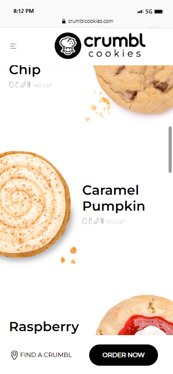
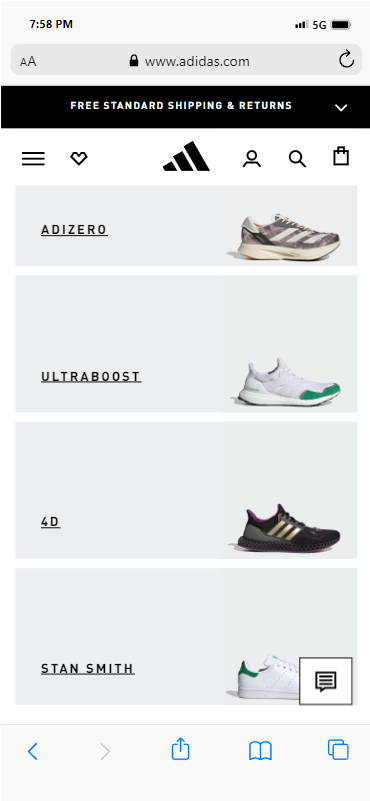
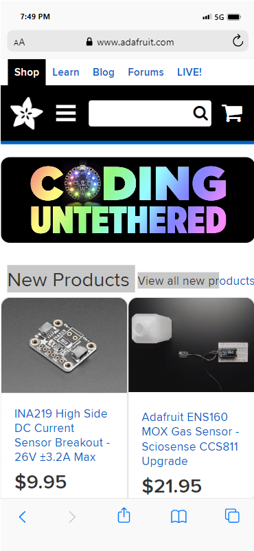

Design Principles Document
Jordan M. Eldredge
White Space & Clean Design

This website has a very good use of white space, even when viewing on mobile. The images and text are evenly spaced out, giving the website a clean look. Information on the page is easy to read and has little distraction. Even the navigation bar is kept simple, which works well for mobile use.
Source:
crumblcookies.comRule of Thirds

The display of this website is aesthetically pleasing to the eye by following the rule of thirds. If you imagine vertical lines dividing the page into three parts, you'll find the product name on the left, and an image of the product on the right. The middle section is kept empty, with only the Adidas logo at the very top.
Source:
adidas.comFitt's Law

When viewing Adafruit's website on mobile, you can really notice fitt's law taking effect. The buttons and tabs on the webpage are large, requiring little effort to interact with it. Unfortunately, I was unable to show the whole website in this snapshot, however I would recommend giving it a look for yourself. The website is mobile friendly. Even when viewing on desktop, buttons will still be easy to notice and click on.
Source:
adafruit.com